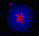

|  |
Self-Organized sorting around radioactive particlesBy Carlos Badenes |
Exist some particles, e.g. radioactive particles, that must be isolated to avoid propagate their effects.
Inspired by the biological phenomena of chemotaxis and the distribution model of gas particles a new algorithm is proposed to self-organize radioactive particles.
Two types of agents are initially randomly placed in a toroidal environment, one of them emit radiation and the other one try to isolate them.
These agents self-organise into a complex aggregate consisting of a group of radioactive agents surrounded by insulating agents. This paper describes the self-organized sorting algorithm.